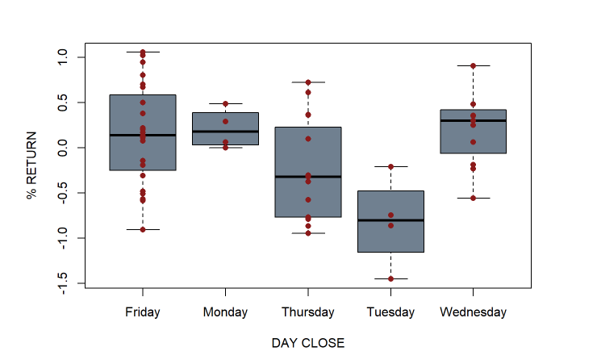
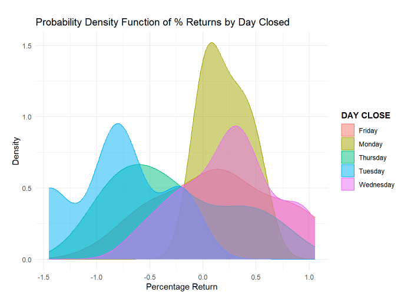
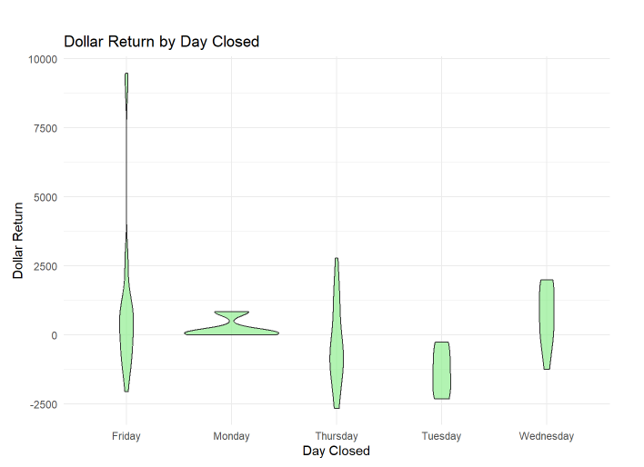

Statistical Analysis of Equity Option Calendar Spreads
Project Summary
This project analyzes historical performance and statistical characteristics of SPX calendar spreadsThese trades involve selling a short-dated option and buying a longer-dated option with the same strike price, profiting from time decay (theta) and changes in volatility (vega). By collecting and organizing historical trades into a structured table, I built a dataset that allowed for rigorous statistical testing and interpretation.
Key Findings
I found that while the average return was positive, there was significant dispersion. A handful of trades contributed heavily to the cumulative profit, suggesting a fat-tailed distribution. The strategy did not pass the Shapiro-Wilk test for normality, so I complemented t-tests with nonparametric alternatives like the Wilcoxon signed-rank test to validate results.
The day of week analysis showed an intriguing pattern: trades opened midweek (Tuesdays and Wednesdays) tended to perform better than those on Mondays or Fridays. Additionally, trades held for just 1 day had more volatile returns than those held for 2–3 days, reflecting the interplay of gamma risk and theta decay.
I also examined whether higher implied volatility (VIX) at trade entry correlated with larger returns. A simple scatter plot and correlation analysis suggested a modest positive relationship, consistent with the idea that calendar spreads perform better when there's more "vega" exposure to exploit.
Day of Week Analysis
This boxplot is displaying the percentage return of these different trades based off the day the trade was closed. The black line in the center of the box represents the median for that group. The line above and below the box represent the high and the low for that group.
The probability density plot displayed here shows the distribution of returns from the SPX calendar spread trades included in this project. Unlike a histogram, which groups data into bins, this plot uses a smooth curve (typically based on kernel density estimation) to visualize the likelihood of different return outcomes across all trades. On the x-axis, we have the percentage return from each trade ranging from large losses on the left to large gains on the right. The y-axis represents the estimated probability density, not the probability itself. The height of the curve at any point shows how frequently that range of returns occurred relative to others.If the curve is tall and narrow, that suggests most of the returns were clustered near the average. If the curve is wider or skewed, it indicates more variability or asymmetry in outcomes. In our case, the density curve shows that while many trades clustered around small gains or breakeven, there were a few trades with larger positive returns that “pulled the tail” of the distribution to the right.This shape gives us insight into the risk-return profile of the strategy. A distribution that’s skewed right (with a long right tail) often implies that the strategy has a lot of small winners and occasional big wins but may also carry downside risk if volatility increases unpredictably. This plot helped confirm that the return data was not normally distributed, which influenced our choice of statistical tests (like using the Shapiro-Wilk test and nonparametric alternatives).
This violin plot visualizes the distribution of dollar returns from SPX calendar spread trades based on the day of the week the trade was closed. Each “violin” represents the density and spread of trade outcomes for one specific weekday, combining the clarity of a boxplot with the richness of a probability density function.
This in conjuction with the probability density plot can give us a good idea of how these distributions look. Monday and Wednesday show tighter, more stable distributions, clustered around small gains. The Monday violin is especially narrow and centered near zero, suggesting that trades closed on Mondays tended to be low-volatility and often breakeven or marginally profitable. Tuesday and Thursday show modest but uneven performance. The Tuesday violin has a lower center and narrower shape, indicating mostly small losses with little upside, while Thursday exhibits a slightly wider distribution with potential for moderate gains or losses. Finally, Friday the most striking feature is the wide and tall shape of the Friday violin. This reflects both high return volatility and a few very large outliers positive trades that reached well above $7,500. While many trades still ended near zero, Friday closures showed the broadest range of outcomes, including the largest wins and steep losses.
Closing Thoughts
Financial strategies often live in the grey area between randomness and edge. This project bridges that gap using statistical reasoning. While the results don’t promise a magic formula, they underscore the value of data, structure, and critical testing in making trading strategies more accountable and potentially more effective.